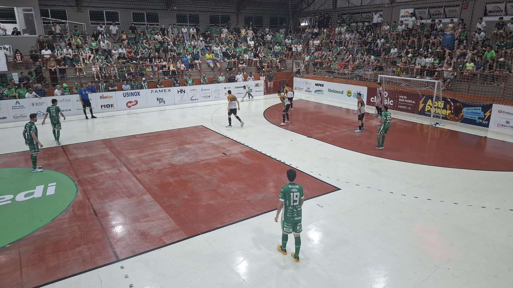

A equipe Prefeitura de Chapecó/Chapecoense/Unochapecó entrou em ação na noite desta sexta-feira (13), no Ginásio Plínio Arlindo De Nes (SER Aurora), em Chapecó. O Verdão das Quadras acabou superado pelo Criciúma por 3 a 2, pelo confronto da volta da semifinal da Copa Santa Catarina de Futsal e se despediu do torneio entre os quatro melhores.
A torcida verde-branca lotou as arquibancadas e viu um primeiro tempo eletrizante, com os donos da casa criando as chances mais claras. A bola teimava em não entrar, até que Douglinhas balançou a rede aos 11'37", para a alegria do público. Porém, os visitantes surpreenderam logo depois, aos 11'57", com gol de Negretti. As oportunidades continuaram dos dois lados, mas o jogo foi para o intervalo empatado.

A Chape Futsal voltou para a segunda etapa acesa, querendo desempatar o marcador. Melhor no duelo, os anfitriões voltaram à dianteira do placar a 1'54", com Nogueira. Contudo, a equipe tricolor não se entregava e igualou novamente aos 3'29", com Cardoso. O Criciúma virou aos 8'28' com Saymon. O Verdão insistiu com o goleiro-linha nos minutos finais, mas o resultado não mudou.
Agora, a Chapecoense Futsal tem mais dois campeonatos a disputar até o fim desta temporada. O Brasileiro, onde está na semifinal ainda sem data definida, contra Atlético-PI ou Sorriso-MT, e os JASC, de 23 a 28 de novembro, em Rio do Sul.
Crédito das fotos: Sheilla Pedroso/Chape Futsal